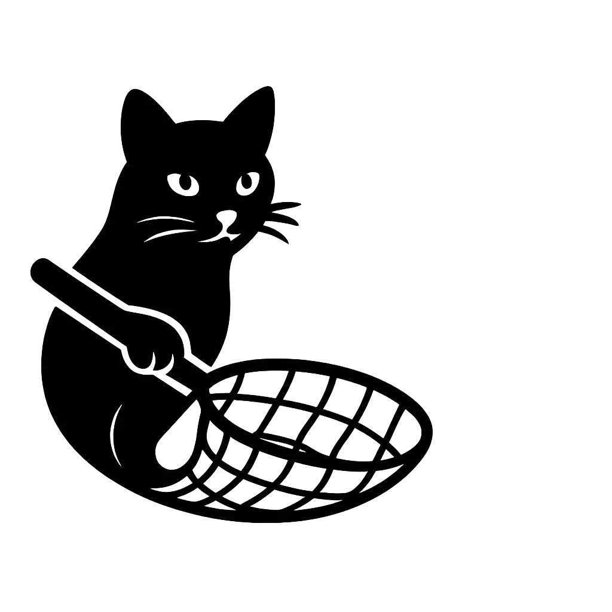

 KATch
2
NetKAT Analyzer
Enter a NetKAT expression into the editor below. The emptiness analysis will be done as you type.
// Example NetKAT expression x0:=0; x1:=0; ((x0==0; x0:=1 + x0==1; x1:=1); dup)*; x0==0; x1==1
View KATch2 source on GitHub